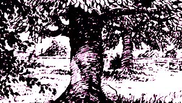
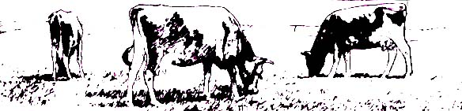
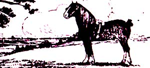
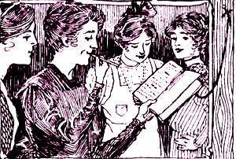

This page contains excerpts from issues of Successful Farming dated 1914.
The time has now arrived when the pruning shears will be pressed into service, and in order to get the most out of our work we must go about it with system. One year old apple and peach trees should be pruned back to four branches four to six inches long; one in each direction, and scattered up and down the trunk as much as possible. The second year these branches should be allowed two side branches, clipped off at one-third or one-half their length. The center also should be opened up to form a low headed tree with an open center. The object of the latter is to let the sunshine down among the lower branches to keep them in perfect health, and to color up the fruit. he third and fourth years the trees should be thinned out, cut off flat on top, and the center kept open.
After the trees come into bearing the treatment for peach and apple trees will differ more. Peach trees should be kept flat on top, the centers open, and the one year old twigs, on which the fruit is borne, should be clipped to make them stockier should and to get the fruit in nearer the stout branches. Apple trees should be pruned just enough to keep them thinned out, so the sunlight can get down through, and so the spraying and harvesting can be done thoroughly; also the top should be kept flat as possible without clipping the twigs.
All cuts should be made with a sharp shears, and in cases where a large limb must be sawed off the cut should be made close up to the trunk or main branch, and the surface of the wound painted to preserve the wood.
No two trees can be trimmed in just the same way, so judgment must be used to get the trees as near the ideal as possible.-A.A.M.
Let some of our housewives who think the prepared mustard they buy is so good leave some cheap spoon, knife or fork in the mustard dish from one meal to another. The greenish spots that appear around the spoon ought to warn them that this prepared mustard is totally unfit to be taken into the human body.
Any housewife can make much more economical mustard, one that is not only cheaper than the boughten kind, but more palatable and healthful, by taking three teaspoonfuls of ground mustard, adding one egg, one teaspoonful of starch, a pinch of salt, and one-half cup of mild vine
Stir and beat these ingredients together till a smooth paste is formed; then put on the stove and let come to a boil.-Mrs. M.C.C.
There are a number of characteristics that distinguish a good cow, but there are two that a good cow never lacks-they are invariable accompaniments. Take it where you will, and of whatever breed or type, a good cow always has a good head-a distinct dairy head-indicating strong vital and nerve force, and a capacious, roomy, well-formed udder. The head of a good dairy cow is never coarse and rough, but always clean and feminine, yet strong and matronly. The udder should never be deep and pointed, shaped like an inverted bottle, but broad in the lower surface and the quarters evenly developed and placed well apart. A good cow will have large prominent milk veins, and rich, soft, velvety skin.
These two things, remember, are the foundation for a profitable cow. They are not the only essential features, but cow that has not these characteristic, had better be discarded, even though she has a royal pedigree.-R. B. S.
Laryngitis -High bred mare 10 years old has cough which bothers her very much at night, but not so much during the day. Noticed this cough last two months. She breathes very heavy when driving in a trot or when running about the field but not when walking or pulling load. Sometimes drives 6 miles in a steady gait. When I slow her down the heavy breathing stops and one could not tell from her breathing that she had been driven out of a walk. I work her with collar which seems a perfect fit and does not choke her. She is in good condition and eats well. Have not tried any remedy. What can I do?-H. A. S., Miss.
Evidently your mare has laryngitis in a chronic form and may result in roaring. Try a light blister on each side of the throat and give her one tablespoon of Fowlers Solution of arsenic and a teaspoon of fluid extract Nux Vomica in a little water twice a day for a week or ten days.
Thoroughpin -Please give me a cure for thoroughpin.-Farmer, Ind.
Level the foot; draw out the fluid with hollow needle and blister with Spanish fly one ounce, lard three ounces.
Squibs From a Farm Wife's Note Book
ANYTHING, hot placed on dark oilcloth turns it white. To remove these spots rub with alcohol and polish with a dry cloth. The ideal work table is covered with zinc.
There is no science that can help one to succeed while she thinks, talks and lives "fail."
In baking bread or rolls put a saucepan of boiling water in the oven with them. The steam will keep the crust smooth and tender
This is from Bishop Quayle: "You can't work if you worry, but," he adds, "you won't worry if you work."
When boiling green vegetables, a small particle of soda or a lump of sugar in the water will keep the color fresh.
Difficulties are things that show what men (common gender) are made of.
To clean mica in stoves use vinegar and water. Soap and water will not do nearly so well.
This old saying of Grandmother's will bear thinking of: "No one can successfully run her house alone; she needs a neighbor to help." Keep your eyes open to new methods and your ears to helpful suggestions.
Do not plunge the glasses that have had milk in them into hot water before they have been well rinsed with cold or they will remain "cloudy" a long time.
When milk boils over in the oven or on the stove, sprinkle with a thick layer of salt, let it remain a few minutes then brush everything off.
Let's remember for ourselves and for our children, that physical health has a strong influence on character as well as on comfort and disposition.
Tough meat may be made tender by laying it for a few minutes in vinegar and water. If it is a boiling piece or tough chicken, simply add a tablespoon of vinegar to the boiling water.
In governing children there is one thing worse, if possible, than being wrong, and that is being in a hurry. Impatience, if joined to great conscientiousness results in tyranny; if joined to something less it at least results in injustice.
Dissolve copperas and lye often in your drain pipes to cleanse and disinfect them.
Someone said, "The best thing in the world is a road leading hill-the thing that leads and beckons to unseen beauties and victories.
|
 |
 |
 |
|
 |
|
|